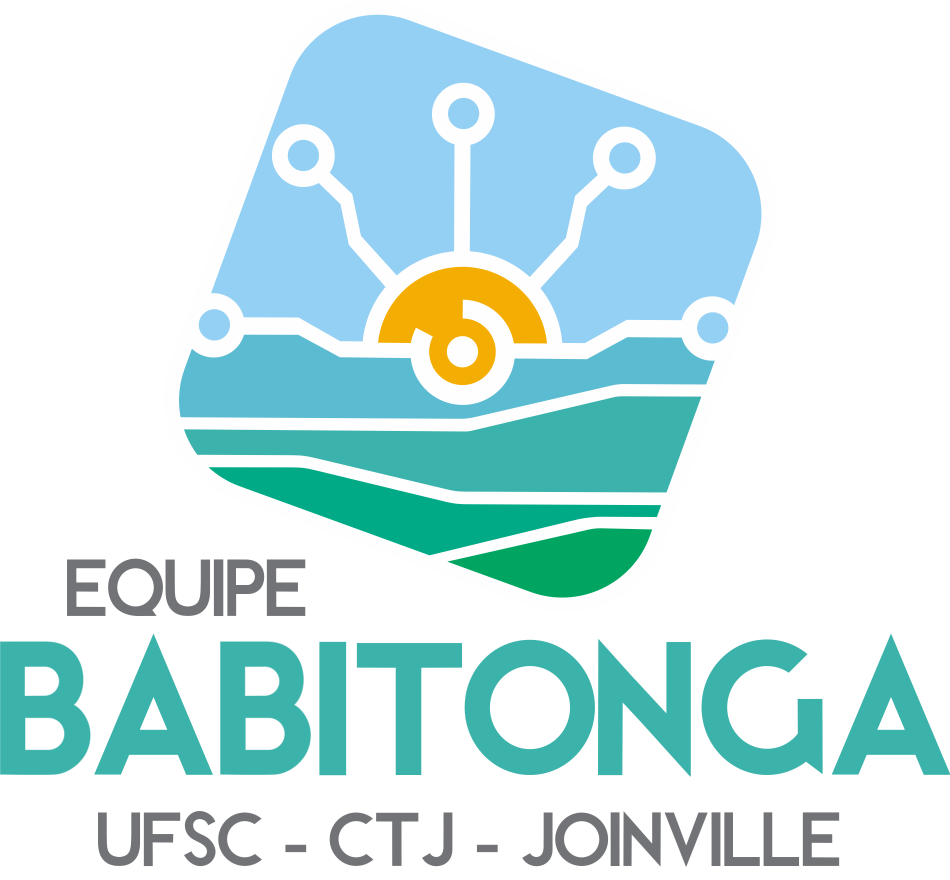

Equipe Babitonga
· Telemetria
UFSC · CTJ · Joinville — embarcação solar
AGUARDANDO
Frame
--
Velocidade
--
--
Rotação do motor
--
--
Temperatura do motor
--
--
Carga da bateria
--
--
GPS
--
--
Sinal LoRa
--
--
IMU — Atitude do casco
PROA / POPA
Pitch
POPA
PROA
--
SEM DADOS
Visualização 3D indisponível.
BB / BE
Roll
BOMBORDO · BB
BORESTE · BE
--
SEM DADOS
Visualização 3D indisponível.
X
--
Y
--
Z
--
g
ZERAR
INVERTER PROA/POPA
INVERTER BB/BE
TROCAR X↔Y
SIMULAR
GPS — Posição do LoRa remoto
LAT
--
LON
--
HDOP
--
SAT
--
Sensores de temperatura · 10 canais
Corrente, Tensão e Potência
Fluxo